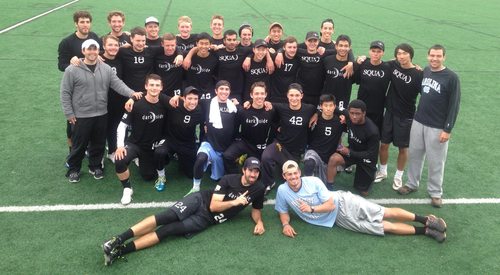

The Series
Darkside came into the post-season with dissappointing losses in all the regular season tournaments they played in.
Regionals
Darkside cruised through pool play and into the finals of regionals to earn a matchup against their rival: UNC Wilmington. Darkside stomped Wilmington, prevailing with a 15–7 victory.
Darkside now looked completely different from the team that did not win a single regular season tournament as they headed to Milwaukee as the #3 overall seed.
Nationals
Darkside carried their momentum from regionals into pool play on Friday with wins over Florida State, Illinois, and Maryland. Their hard work meant that they locked up their pool, and got to rest in their game against Oregon.
Bracket play started off with a rematch of the 2014 finals against Colorado. Darkside came out strong and outplayed Colorado in a 15–9 victory to advance to the semi-finals where they played Central Florida. Both teams started out strong, but Darkside pulled away in the occasionally chippy game that ended in a 15–10 win to advance to the finals. The game was Darkside’s from the beginning as they cruised to a 15–6 victory against a totally outmatched Oregon team and clinched their first national title.